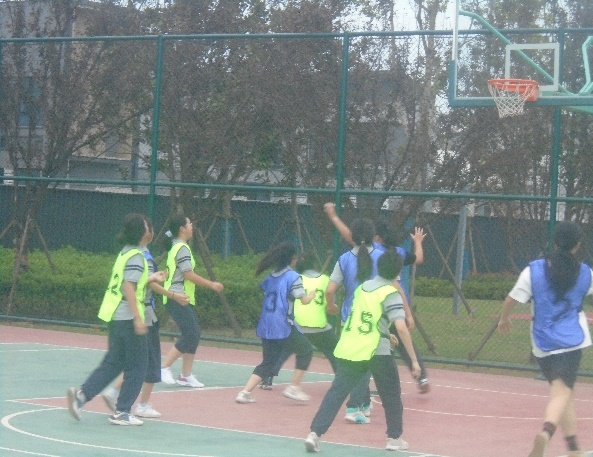

拼搏掷地有声
编者：李诗妍 常雨涵
世合校园篮球场边人山人海，激情澎湃。场上六班和四班正在进行对决。

真值夏末，空气人带有余温，这更点燃了两个班同学的热情。场边的同学围观呐喊，为自己班的运动员加油。赛场上806班运动员互相配合着，渐渐将比分追平。

随着时间的一点一滴流逝，比赛渐渐进入末尾。两个班的同学逐渐紧张起来，焦急地看着那比分10：10。
突然，6班的球员抢到了篮球，3号球员边跑边喊：“快，传球!”说着，球便落入她的手中。紧接着，她迅速转身，换手，绕过3个球员，起跳，抛球。随着篮球在空中化出一道优美的弧线后，“唰”地一身进入球筐，2分！球进入球筐，比赛也刚好结束。场上瞬间沸腾起来，观众一拥而上，围住球员，为她们欢呼。所有人的脸上洋溢着欢快的笑容和胜利的喜悦。